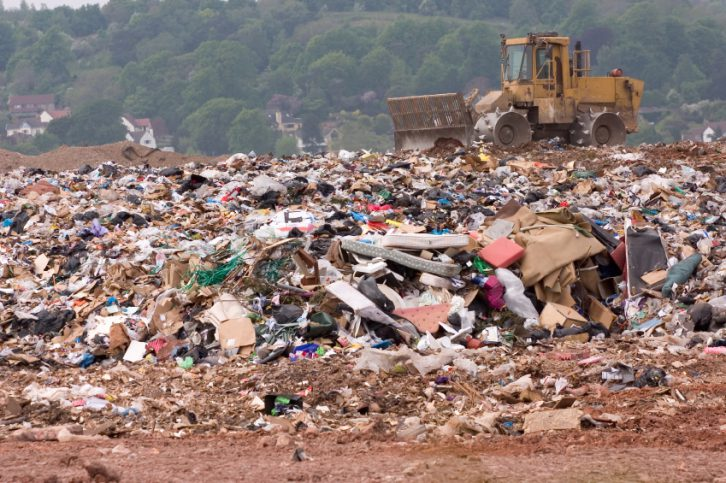

Contaminación Ambiental
¿Qué es la contaminación ambiental?
La importancia de mitigar la contaminación ambiental radica en que la salud de nuestro entorno es el pilar fundamental que sostiene la vida humana, la economía y el bienestar social. No se trata simplemente de preservar paisajes, sino de garantizar la pureza del aire que respiramos y el agua que consumimos, elementos que hoy se ven comprometidos por una gestión ineficiente de residuos. Al proteger los ecosistemas, aseguramos la seguridad alimentaria, prevenimos crisis sanitarias globales y construimos una base sólida para un desarrollo que no hipoteque los recursos de las futuras generaciones, convirtiendo la sostenibilidad en el único camino viable para la supervivencia de nuestra civilización.

Explicación ampliada: Los tres pilares
Se produce cuando gases tóxicos y partículas contaminantes se liberan a la atmósfera, afectando la calidad del aire que respiramos.
- Emisiones de vehículos e industrias
- Quema de combustibles fósiles

Ocurre cuando residuos químicos o basura contaminan ríos, lagos y océanos, afectando tanto a la fauna como a los seres humanos.
Los vertidos industriales y plásticos son los principales causantes.

Sucede cuando residuos sólidos o productos químicos se acumulan en la tierra, dañando los ecosistemas y la producción agrícola.

Conclusión
La contaminación ambiental no es solo un concepto estadístico o un problema lejano; es uno de los mayores desafíos que enfrenta la humanidad en el siglo XXI. Su avance representa una amenaza directa a la estabilidad de los sistemas que sostienen la vida. Reducir su impacto requiere mucho más que simples acuerdos internacionales; exige una transformación profunda en nuestra educación ambiental y un cambio radical en los hábitos de consumo que hemos normalizado durante décadas.
Más allá de las grandes normativas gubernamentales o los protocolos climáticos, la verdadera clave reside en la transición urgente hacia una economía circular. Este modelo busca que el concepto de "desperdicio" desaparezca por completo, transformando cada residuo en un nuevo recurso aprovechable al máximo. Debemos entender que los recursos de la Tierra son finitos y que nuestro ritmo actual de extracción y desecho es insostenible a largo plazo.
Adoptar una mentalidad de respeto y ética hacia nuestro entorno inmediato es el primer paso crítico para revertir el daño causado. La tecnología, si se implementa de forma responsable, puede ser nuestra mejor aliada: desde sistemas avanzados para limpiar los microplásticos de los océanos hasta innovaciones en la purificación del aire urbano. Sin embargo, la tecnología por sí sola no es la solución si no va acompañada de una conciencia colectiva que valore la biodiversidad por encima del beneficio inmediato.
En última instancia, el éxito de la lucha contra la contaminación dependerá de nuestra capacidad para actuar hoy. Cada pequeña acción contribuye a un efecto dominó positivo. No estamos simplemente "salvando el planeta", estamos asegurando la viabilidad de la civilización humana y protegiendo el legado natural para las generaciones que aún no han nacido.
"Proteger el medio ambiente no es solo una opción, es una necesidad para el futuro."